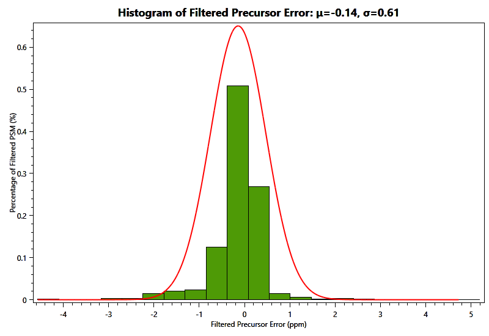

3. FDR Curve
Figure 1 FDR Curve (Spectral Level).

pLink MS/MS Analysis Report
2024-6-20 automatically created by pLink 2.3.11
1. Cross-Linked Results
Table 1 Identification of Cross-Linked Results Under 1% FDR Control.
2. All Results
Table 2 Identification of Spectra Under 1% FDR Control.
| Types | Cross-Linked Spectra | Loop-Linked Spectra | Mono-Linked Spectra | Regular Spectra | Counts | 961 | 4 | 376 | 43 |
| Percent | 69.4% | 0.3% | 27.2% | 3.1% |
Table 3 Identification of Peptides (Pairs) Under 1% FDR Control.
| Types | Cross-Linked Peptide Pairs | Loop-Linked Peptides | Mono-Linked Peptides | Regular Peptides | Counts | 252 | 3 | 60 | 26 |
| Percent | 73.9% | 0.9% | 17.6% | 7.6% |
Table 4 Identification of Linked Sites Under 1% FDR Control.
| Types | Cross-Linked Sites (Group) | Loop-Linked Sites (Group) | Counts | 251 (251) | 3 (3) |
| Percent | 98.8% | 1.2% |
3. FDR Curve
Figure 1 FDR Curve (Spectral Level).
4. Precursor Error Distribution
Figure 2 All Precursor Error Distribution.

Figure 3 Filtered Precursor Error Distribution.

5. Running Time
Table 5 Running Time of Identification
| Start Time | Thu Jun 20 13:26:54 2024 |
| End Time | Thu Jun 20 13:26:58 2024 |
| Time Cost | 4.198s |